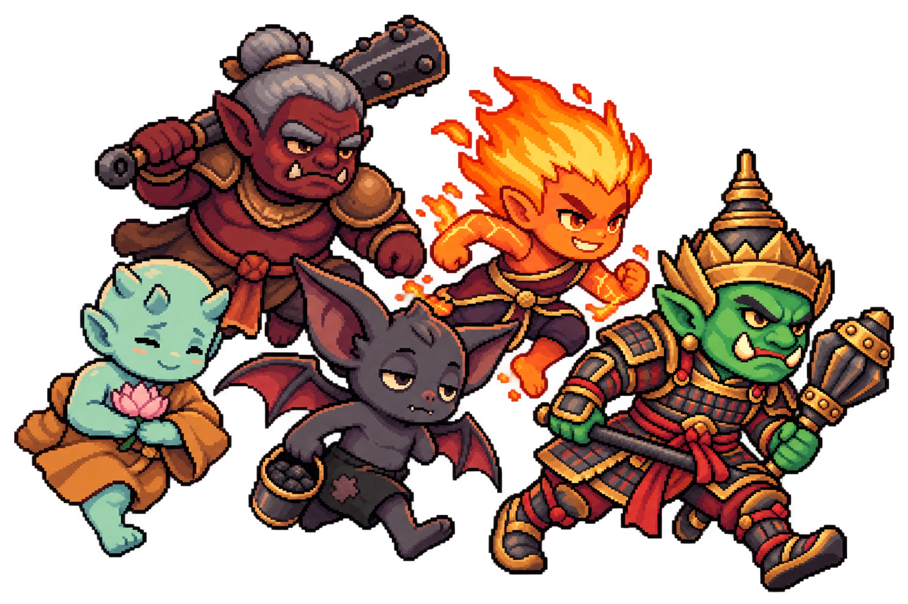
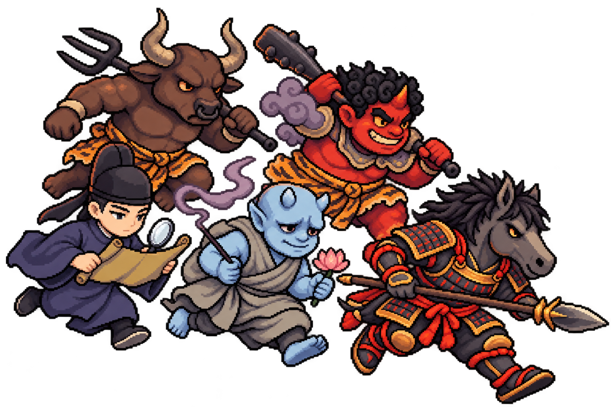
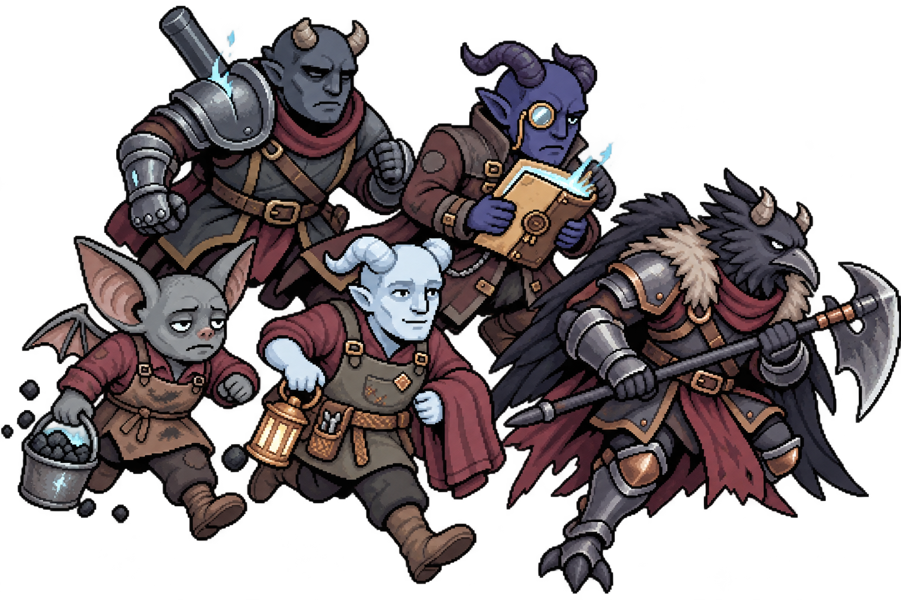
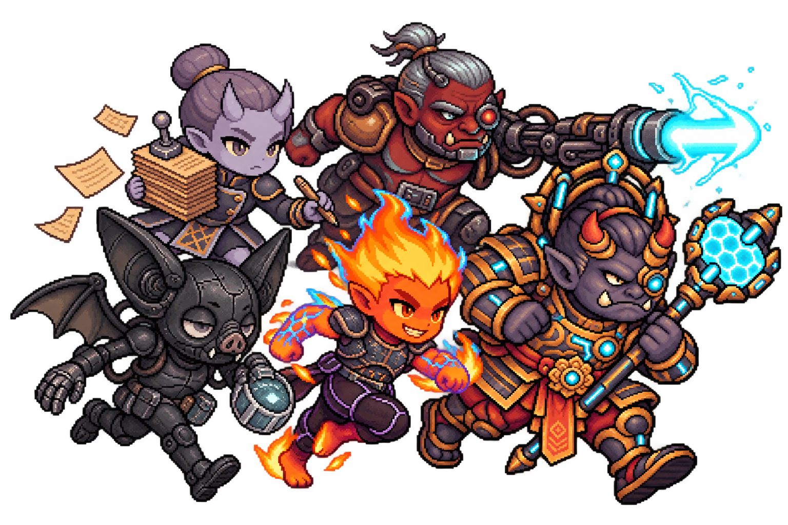

ปีศาจ 3 wave → กองหนุนปรากฏตัวและรับมือลูกน้อง → พักเติมเลือด / พ่อค้านรก / จัดทีม → หัวหน้าทั้ง 4 → พัก → บอสใหญ่
พร้อมเริ่มศึกทดสอบ · ไม่ใช้เซฟของผู้เล่น
ยมทูตและ Guard ประจำสาขา · นิราใช้ชุดไซเบอร์ในศึกสุดท้าย



